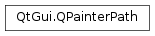
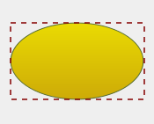
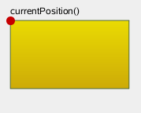
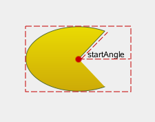

QPainterPath¶
Synopsis¶
Functions¶
- def
__add__(other) - def
__and__(other) - def
__eq__(other) - def
__iadd__(other) - def
__iand__(other) - def
__ior__(other) - def
__isub__(other) - def
__mul__(, m) - def
__mul__(, m) - def
__ne__(other) - def
__or__(other) - def
__sub__(other) - def
addEllipse(center, rx, ry) - def
addEllipse(rect) - def
addEllipse(x, y, w, h) - def
addPath(path) - def
addPolygon(polygon) - def
addRect(rect) - def
addRect(x, y, w, h) - def
addRegion(region) - def
addRoundRect(rect, roundness) - def
addRoundRect(rect, xRnd, yRnd) - def
addRoundRect(x, y, w, h, roundness) - def
addRoundRect(x, y, w, h, xRnd, yRnd) - def
addRoundedRect(rect, xRadius, yRadius[, mode=Qt.AbsoluteSize]) - def
addRoundedRect(x, y, w, h, xRadius, yRadius[, mode=Qt.AbsoluteSize]) - def
addText(point, f, text) - def
addText(x, y, f, text) - def
angleAtPercent(t) - def
arcMoveTo(rect, angle) - def
arcMoveTo(x, y, w, h, angle) - def
arcTo(rect, startAngle, arcLength) - def
arcTo(x, y, w, h, startAngle, arcLength) - def
boundingRect() - def
closeSubpath() - def
connectPath(path) - def
contains(p) - def
contains(pt) - def
contains(rect) - def
controlPointRect() - def
cubicTo(ctrlPt1, ctrlPt2, endPt) - def
cubicTo(ctrlPt1x, ctrlPt1y, ctrlPt2x, ctrlPt2y, endPtx, endPty) - def
currentPosition() - def
elementAt(i) - def
elementCount() - def
fillRule() - def
intersected(r) - def
intersects(p) - def
intersects(rect) - def
isEmpty() - def
length() - def
lineTo(p) - def
lineTo(x, y) - def
moveTo(p) - def
moveTo(x, y) - def
percentAtLength(t) - def
pointAtPercent(t) - def
quadTo(ctrlPt, endPt) - def
quadTo(ctrlPtx, ctrlPty, endPtx, endPty) - def
setElementPositionAt(i, x, y) - def
setFillRule(fillRule) - def
simplified() - def
slopeAtPercent(t) - def
subtracted(r) - def
subtractedInverted(r) - def
swap(other) - def
toFillPolygon([matrix=QMatrix()]) - def
toFillPolygon(matrix) - def
toFillPolygons([matrix=QMatrix()]) - def
toFillPolygons(matrix) - def
toReversed() - def
toSubpathPolygons([matrix=QMatrix()]) - def
toSubpathPolygons(matrix) - def
translate(dx, dy) - def
translate(offset) - def
translated(dx, dy) - def
translated(offset) - def
united(r)
Detailed Description¶
The
PySide2.QtGui.QPainterPathclass provides a container for painting operations, enabling graphical shapes to be constructed and reused.A painter path is an object composed of a number of graphical building blocks, such as rectangles, ellipses, lines, and curves. Building blocks can be joined in closed subpaths, for example as a rectangle or an ellipse. A closed path has coinciding start and end points. Or they can exist independently as unclosed subpaths, such as lines and curves.
A
PySide2.QtGui.QPainterPathobject can be used for filling, outlining, and clipping. To generate fillable outlines for a given painter path, use thePySide2.QtGui.QPainterPathStrokerclass. The main advantage of painter paths over normal drawing operations is that complex shapes only need to be created once; then they can be drawn many times using only calls to theQPainter.drawPath()function.
PySide2.QtGui.QPainterPathprovides a collection of functions that can be used to obtain information about the path and its elements. In addition it is possible to reverse the order of the elements using thePySide2.QtGui.QPainterPath.toReversed()function. There are also several functions to convert this painter path object into a polygon representation.
Composing a QPainterPath¶
A
PySide2.QtGui.QPainterPathobject can be constructed as an empty path, with a given start point, or as a copy of anotherPySide2.QtGui.QPainterPathobject. Once created, lines and curves can be added to the path using thePySide2.QtGui.QPainterPath.lineTo(),PySide2.QtGui.QPainterPath.arcTo(),PySide2.QtGui.QPainterPath.cubicTo()andPySide2.QtGui.QPainterPath.quadTo()functions. The lines and curves stretch from thePySide2.QtGui.QPainterPath.currentPosition()to the position passed as argument.The
PySide2.QtGui.QPainterPath.currentPosition()of thePySide2.QtGui.QPainterPathobject is always the end position of the last subpath that was added (or the initial start point). Use thePySide2.QtGui.QPainterPath.moveTo()function to move thePySide2.QtGui.QPainterPath.currentPosition()without adding a component. ThePySide2.QtGui.QPainterPath.moveTo()function implicitly starts a new subpath, and closes the previous one. Another way of starting a new subpath is to call thePySide2.QtGui.QPainterPath.closeSubpath()function which closes the current path by adding a line from thePySide2.QtGui.QPainterPath.currentPosition()back to the path’s start position. Note that the new path will have (0, 0) as its initialPySide2.QtGui.QPainterPath.currentPosition().
PySide2.QtGui.QPainterPathclass also provides several convenience functions to add closed subpaths to a painter path:PySide2.QtGui.QPainterPath.addEllipse(),PySide2.QtGui.QPainterPath.addPath(),PySide2.QtGui.QPainterPath.addRect(),PySide2.QtGui.QPainterPath.addRegion()andPySide2.QtGui.QPainterPath.addText(). ThePySide2.QtGui.QPainterPath.addPolygon()function adds an unclosed subpath. In fact, these functions are all collections ofPySide2.QtGui.QPainterPath.moveTo(),PySide2.QtGui.QPainterPath.lineTo()andPySide2.QtGui.QPainterPath.cubicTo()operations.In addition, a path can be added to the current path using the
PySide2.QtGui.QPainterPath.connectPath()function. But note that this function will connect the last element of the current path to the first element of given one by adding a line.Below is a code snippet that shows how a
PySide2.QtGui.QPainterPathobject can be used:
The painter path is initially empty when constructed. We first add a rectangle, which is a closed subpath. Then we add two bezier curves which together form a closed subpath even though they are not closed individually. Finally we draw the entire path. The path is filled using the default fill rule,
Qt.OddEvenFill. Qt provides two methods for filling paths:
Qt.OddEvenFillQt.WindingFillSee the
Qt.FillRuledocumentation for the definition of the rules. A painter path’s currently set fill rule can be retrieved using thePySide2.QtGui.QPainterPath.fillRule()function, and altered using thePySide2.QtGui.QPainterPath.setFillRule()function.

QPainterPath Information¶
The
PySide2.QtGui.QPainterPathclass provides a collection of functions that returns information about the path and its elements.The
PySide2.QtGui.QPainterPath.currentPosition()function returns the end point of the last subpath that was added (or the initial start point). ThePySide2.QtGui.QPainterPath.elementAt()function can be used to retrieve the various subpath elements, the number of elements can be retrieved using thePySide2.QtGui.QPainterPath.elementCount()function, and thePySide2.QtGui.QPainterPath.isEmpty()function tells whether thisPySide2.QtGui.QPainterPathobject contains any elements at all.The
PySide2.QtGui.QPainterPath.controlPointRect()function returns the rectangle containing all the points and control points in this path. This function is significantly faster to compute than the exactPySide2.QtGui.QPainterPath.boundingRect()which returns the bounding rectangle of this painter path with floating point precision.Finally,
PySide2.QtGui.QPainterPathprovides thePySide2.QtGui.QPainterPath.contains()function which can be used to determine whether a given point or rectangle is inside the path, and thePySide2.QtGui.QPainterPath.intersects()function which determines if any of the points inside a given rectangle also are inside this path.
QPainterPath Conversion¶
For compatibility reasons, it might be required to simplify the representation of a painter path:
PySide2.QtGui.QPainterPathprovides thePySide2.QtGui.QPainterPath.toFillPolygon(),PySide2.QtGui.QPainterPath.toFillPolygons()andPySide2.QtGui.QPainterPath.toSubpathPolygons()functions which convert the painter path into a polygon. ThePySide2.QtGui.QPainterPath.toFillPolygon()returns the painter path as one single polygon, while the two latter functions return a list of polygons.The
PySide2.QtGui.QPainterPath.toFillPolygons()andPySide2.QtGui.QPainterPath.toSubpathPolygons()functions are provided because it is usually faster to draw several small polygons than to draw one large polygon, even though the total number of points drawn is the same. The difference between the two is the number of polygons they return: ThePySide2.QtGui.QPainterPath.toSubpathPolygons()creates one polygon for each subpath regardless of intersecting subpaths (i.e. overlapping bounding rectangles), while thePySide2.QtGui.QPainterPath.toFillPolygons()functions creates only one polygon for overlapping subpaths.The
PySide2.QtGui.QPainterPath.toFillPolygon()andPySide2.QtGui.QPainterPath.toFillPolygons()functions first convert all the subpaths to polygons, then uses a rewinding technique to make sure that overlapping subpaths can be filled using the correct fill rule. Note that rewinding inserts additional lines in the polygon so the outline of the fill polygon does not match the outline of the path.
Examples¶
Qt provides the Painter Paths Example and the Vector Deformation example which are located in Qt’s example directory.
The Painter Paths Example shows how painter paths can be used to build complex shapes for rendering and lets the user experiment with the filling and stroking. The Vector Deformation Example shows how to use
PySide2.QtGui.QPainterPathto draw text.
Painter Paths Example Vector Deformation Example


-
class
PySide2.QtGui.QPainterPath¶ -
class
PySide2.QtGui.QPainterPath(other) -
class
PySide2.QtGui.QPainterPath(startPoint) Parameters: - other –
PySide2.QtGui.QPainterPath - startPoint –
PySide2.QtCore.QPointF
Constructs an empty
PySide2.QtGui.QPainterPathobject.Creates a
PySide2.QtGui.QPainterPathobject that is a copy of the givenpath.See also
PySide2.QtGui.QPainterPath.operator=()Creates a
PySide2.QtGui.QPainterPathobject with the givenstartPointas its current position.- other –
-
PySide2.QtGui.QPainterPath.ElementType¶ This enum describes the types of elements used to connect vertices in subpaths.
Note that elements added as closed subpaths using the
PySide2.QtGui.QPainterPath.addEllipse(),PySide2.QtGui.QPainterPath.addPath(),PySide2.QtGui.QPainterPath.addPolygon(),PySide2.QtGui.QPainterPath.addRect(),PySide2.QtGui.QPainterPath.addRegion()andPySide2.QtGui.QPainterPath.addText()convenience functions, is actually added to the path as a collection of separate elements using thePySide2.QtGui.QPainterPath.moveTo(),PySide2.QtGui.QPainterPath.lineTo()andPySide2.QtGui.QPainterPath.cubicTo()functions.Constant Description QPainterPath.MoveToElement A new subpath. See also PySide2.QtGui.QPainterPath.moveTo().QPainterPath.LineToElement A line. See also PySide2.QtGui.QPainterPath.lineTo().QPainterPath.CurveToElement A curve. See also PySide2.QtGui.QPainterPath.cubicTo()andPySide2.QtGui.QPainterPath.quadTo().QPainterPath.CurveToDataElement The extra data required to describe a curve in a element.
-
PySide2.QtGui.QPainterPath.addEllipse(rect)¶ Parameters: rect – PySide2.QtCore.QRectFCreates an ellipse within the specified
boundingRectangleand adds it to the painter path as a closed subpath.The ellipse is composed of a clockwise curve, starting and finishing at zero degrees (the 3 o’clock position).
 myGradient = QLinearGradient() myPen = QPen() boundingRectangle = QRectF() myPath = QPainterPath() myPath.addEllipse(boundingRectangle) QPainter painter(self) painter.setBrush(myGradient) painter.setPen(myPen) painter.drawPath(myPath)
See also
PySide2.QtGui.QPainterPath.arcTo()QPainter.drawEllipse()Composing a QPainterPath
-
PySide2.QtGui.QPainterPath.addEllipse(x, y, w, h) Parameters: - x –
PySide2.QtCore.qreal - y –
PySide2.QtCore.qreal - w –
PySide2.QtCore.qreal - h –
PySide2.QtCore.qreal
This is an overloaded function.
Creates an ellipse within the bounding rectangle defined by its top-left corner at (
x,y),widthandheight, and adds it to the painter path as a closed subpath.- x –
-
PySide2.QtGui.QPainterPath.addEllipse(center, rx, ry) Parameters: - center –
PySide2.QtCore.QPointF - rx –
PySide2.QtCore.qreal - ry –
PySide2.QtCore.qreal
This is an overloaded function.
Creates an ellipse positioned at
centerwith radiirxandry, and adds it to the painter path as a closed subpath.- center –
-
PySide2.QtGui.QPainterPath.addPath(path)¶ Parameters: path – PySide2.QtGui.QPainterPathAdds the given
pathto this path as a closed subpath.See also
PySide2.QtGui.QPainterPath.connectPath()Composing a QPainterPath
-
PySide2.QtGui.QPainterPath.addPolygon(polygon)¶ Parameters: polygon – PySide2.QtGui.QPolygonFAdds the given
polygonto the path as an (unclosed) subpath.Note that the current position after the polygon has been added, is the last point in
polygon. To draw a line back to the first point, use thePySide2.QtGui.QPainterPath.closeSubpath()function.
myGradient = QLinearGradient() myPen = QPen() myPolygon = QPolygonF() myPath = QPainterPath() myPath.addPolygon(myPolygon) QPainter painter(self) painter.setBrush(myGradient) painter.setPen(myPen) painter.drawPath(myPath)
See also
PySide2.QtGui.QPainterPath.lineTo()Composing a QPainterPath
-
PySide2.QtGui.QPainterPath.addRect(rect)¶ Parameters: rect – PySide2.QtCore.QRectFAdds the given
rectangleto this path as a closed subpath.The
rectangleis added as a clockwise set of lines. The painter path’s current position after therectanglehas been added is at the top-left corner of the rectangle. myGradient = QLinearGradient() myPen = QPen() myRectangle = QRectF() myPath = QPainterPath() myPath.addRect(myRectangle) painter = QPainter(self) painter.setBrush(myGradient) painter.setPen(myPen) painter.drawPath(myPath)
See also
PySide2.QtGui.QPainterPath.addRegion()PySide2.QtGui.QPainterPath.lineTo()Composing a QPainterPath
-
PySide2.QtGui.QPainterPath.addRect(x, y, w, h) Parameters: - x –
PySide2.QtCore.qreal - y –
PySide2.QtCore.qreal - w –
PySide2.QtCore.qreal - h –
PySide2.QtCore.qreal
This is an overloaded function.
Adds a rectangle at position (
x,y), with the givenwidthandheight, as a closed subpath.- x –
-
PySide2.QtGui.QPainterPath.addRegion(region)¶ Parameters: region – PySide2.QtGui.QRegionAdds the given
regionto the path by adding each rectangle in the region as a separate closed subpath.See also
PySide2.QtGui.QPainterPath.addRect()Composing a QPainterPath
-
PySide2.QtGui.QPainterPath.addRoundRect(x, y, w, h, xRnd, yRnd)¶ Parameters: - x –
PySide2.QtCore.qreal - y –
PySide2.QtCore.qreal - w –
PySide2.QtCore.qreal - h –
PySide2.QtCore.qreal - xRnd –
PySide2.QtCore.int - yRnd –
PySide2.QtCore.int
This is an overloaded function.
Adds a rectangle with rounded corners to the path. The rectangle is constructed from
x,y, and the width and heightwandh.The
xRndandyRndarguments specify how rounded the corners should be. 0 is angled corners, 99 is maximum roundedness.- x –
-
PySide2.QtGui.QPainterPath.addRoundRect(x, y, w, h, roundness) Parameters: - x –
PySide2.QtCore.qreal - y –
PySide2.QtCore.qreal - w –
PySide2.QtCore.qreal - h –
PySide2.QtCore.qreal - roundness –
PySide2.QtCore.int
This is an overloaded function.
Adds a rounded rectangle to the path, defined by the coordinates
xandywith the specifiedwidthandheight.The
roundnessargument specifies uniform roundness for the rectangle. Vertical and horizontal roundness factors will be adjusted accordingly to act uniformly around both axes. Use this method if you want a rectangle equally rounded across both the X and Y axis.- x –
-
PySide2.QtGui.QPainterPath.addRoundRect(rect, xRnd, yRnd) Parameters: - rect –
PySide2.QtCore.QRectF - xRnd –
PySide2.QtCore.int - yRnd –
PySide2.QtCore.int
Adds a rectangle
rwith rounded corners to the path.The
xRndandyRndarguments specify how rounded the corners should be. 0 is angled corners, 99 is maximum roundedness.- rect –
-
PySide2.QtGui.QPainterPath.addRoundRect(rect, roundness) Parameters: - rect –
PySide2.QtCore.QRectF - roundness –
PySide2.QtCore.int
This is an overloaded function.
Adds a rounded rectangle,
rect, to the path.The
roundnessargument specifies uniform roundness for the rectangle. Vertical and horizontal roundness factors will be adjusted accordingly to act uniformly around both axes. Use this method if you want a rectangle equally rounded across both the X and Y axis.- rect –
-
PySide2.QtGui.QPainterPath.addRoundedRect(x, y, w, h, xRadius, yRadius[, mode=Qt.AbsoluteSize])¶ Parameters: - x –
PySide2.QtCore.qreal - y –
PySide2.QtCore.qreal - w –
PySide2.QtCore.qreal - h –
PySide2.QtCore.qreal - xRadius –
PySide2.QtCore.qreal - yRadius –
PySide2.QtCore.qreal - mode –
PySide2.QtCore.Qt.SizeMode
This is an overloaded function.
Adds the given rectangle
x,y,w,hwith rounded corners to the path.- x –
-
PySide2.QtGui.QPainterPath.addRoundedRect(rect, xRadius, yRadius[, mode=Qt.AbsoluteSize]) Parameters: - rect –
PySide2.QtCore.QRectF - xRadius –
PySide2.QtCore.qreal - yRadius –
PySide2.QtCore.qreal - mode –
PySide2.QtCore.Qt.SizeMode
Adds the given rectangle
rectwith rounded corners to the path.The
xRadiusandyRadiusarguments specify the radii of the ellipses defining the corners of the rounded rectangle. WhenmodeisQt.RelativeSize,xRadiusandyRadiusare specified in percentage of half the rectangle’s width and height respectively, and should be in the range 0.0 to 100.0.See also
- rect –
-
PySide2.QtGui.QPainterPath.addText(point, f, text)¶ Parameters: - point –
PySide2.QtCore.QPointF - f –
PySide2.QtGui.QFont - text – unicode
Adds the given
textto this path as a set of closed subpaths created from thefontsupplied. The subpaths are positioned so that the left end of the text’s baseline lies at the specifiedpoint.
myGradient = QLinearGradient() myPen = QPen() myFont = QFont() QPointF baseline(x, y) myPath = QPainterPath() myPath.addText(baseline, myFont, tr("Qt")) painter QPainter(self) painter.setBrush(myGradient) painter.setPen(myPen) painter.drawPath(myPath)
See also
QPainter.drawText()Composing a QPainterPath- point –
-
PySide2.QtGui.QPainterPath.addText(x, y, f, text) Parameters: - x –
PySide2.QtCore.qreal - y –
PySide2.QtCore.qreal - f –
PySide2.QtGui.QFont - text – unicode
This is an overloaded function.
Adds the given
textto this path as a set of closed subpaths created from thefontsupplied. The subpaths are positioned so that the left end of the text’s baseline lies at the point specified by (x,y).- x –
-
PySide2.QtGui.QPainterPath.angleAtPercent(t)¶ Parameters: t – PySide2.QtCore.qrealReturn type: PySide2.QtCore.qrealReturns the angle of the path tangent at the percentage
t. The argumentthas to be between 0 and 1.Positive values for the angles mean counter-clockwise while negative values mean the clockwise direction. Zero degrees is at the 3 o’clock position.
Note that similarly to the other percent methods, the percentage measurement is not linear with regards to the length if curves are present in the path. When curves are present the percentage argument is mapped to the t parameter of the Bezier equations.
-
PySide2.QtGui.QPainterPath.arcMoveTo(x, y, w, h, angle)¶ Parameters: - x –
PySide2.QtCore.qreal - y –
PySide2.QtCore.qreal - w –
PySide2.QtCore.qreal - h –
PySide2.QtCore.qreal - angle –
PySide2.QtCore.qreal
This is an overloaded function.
Creates a move to that lies on the arc that occupies the
PySide2.QtCore.QRectF(x,y,width,height) atangle.- x –
-
PySide2.QtGui.QPainterPath.arcMoveTo(rect, angle) Parameters: - rect –
PySide2.QtCore.QRectF - angle –
PySide2.QtCore.qreal
Creates a move to that lies on the arc that occupies the given
rectangleatangle.Angles are specified in degrees. Clockwise arcs can be specified using negative angles.
- rect –
-
PySide2.QtGui.QPainterPath.arcTo(x, y, w, h, startAngle, arcLength)¶ Parameters: - x –
PySide2.QtCore.qreal - y –
PySide2.QtCore.qreal - w –
PySide2.QtCore.qreal - h –
PySide2.QtCore.qreal - startAngle –
PySide2.QtCore.qreal - arcLength –
PySide2.QtCore.qreal
This is an overloaded function.
Creates an arc that occupies the rectangle
PySide2.QtCore.QRectF(x,y,width,height), beginning at the specifiedstartAngleand extendingsweepLengthdegrees counter-clockwise.- x –
-
PySide2.QtGui.QPainterPath.arcTo(rect, startAngle, arcLength) Parameters: - rect –
PySide2.QtCore.QRectF - startAngle –
PySide2.QtCore.qreal - arcLength –
PySide2.QtCore.qreal
Creates an arc that occupies the given
rectangle, beginning at the specifiedstartAngleand extendingsweepLengthdegrees counter-clockwise.Angles are specified in degrees. Clockwise arcs can be specified using negative angles.
Note that this function connects the starting point of the arc to the current position if they are not already connected. After the arc has been added, the current position is the last point in arc. To draw a line back to the first point, use the
PySide2.QtGui.QPainterPath.closeSubpath()function. myGradient = QLinearGradient() myPen = QPen() startPoint = QPointF() center = QPointF() myPath = QPainterPath() myPath.moveTo(center) myPath.arcTo(boundingRect, startAngle, sweepLength) painter = QPainter(self) painter.setBrush(myGradient) painter.setPen(myPen) painter.drawPath(myPath)
See also
PySide2.QtGui.QPainterPath.arcMoveTo()PySide2.QtGui.QPainterPath.addEllipse()QPainter.drawArc()QPainter.drawPie()Composing a QPainterPath- rect –
-
PySide2.QtGui.QPainterPath.boundingRect()¶ Return type: PySide2.QtCore.QRectFReturns the bounding rectangle of this painter path as a rectangle with floating point precision.
-
PySide2.QtGui.QPainterPath.closeSubpath()¶ Closes the current subpath by drawing a line to the beginning of the subpath, automatically starting a new path. The current point of the new path is (0, 0).
If the subpath does not contain any elements, this function does nothing.
See also
PySide2.QtGui.QPainterPath.moveTo()Composing a QPainterPath
-
PySide2.QtGui.QPainterPath.connectPath(path)¶ Parameters: path – PySide2.QtGui.QPainterPathConnects the given
pathto this path by adding a line from the last element of this path to the first element of the given path.See also
PySide2.QtGui.QPainterPath.addPath()Composing a QPainterPath
-
PySide2.QtGui.QPainterPath.contains(pt)¶ Parameters: pt – PySide2.QtCore.QPointFReturn type: PySide2.QtCore.boolReturns
trueif the givenpointis inside the path, otherwise returnsfalse.
-
PySide2.QtGui.QPainterPath.contains(p) Parameters: p – PySide2.QtGui.QPainterPathReturn type: PySide2.QtCore.boolReturns
trueif the given pathpis contained within the current path. Returnsfalseif any edges of the current path andpintersect.Set operations on paths will treat the paths as areas. Non-closed paths will be treated as implicitly closed.
-
PySide2.QtGui.QPainterPath.contains(rect) Parameters: rect – PySide2.QtCore.QRectFReturn type: PySide2.QtCore.boolReturns
trueif the givenrectangleis inside the path, otherwise returnsfalse.
-
PySide2.QtGui.QPainterPath.controlPointRect()¶ Return type: PySide2.QtCore.QRectFReturns the rectangle containing all the points and control points in this path.
This function is significantly faster to compute than the exact
PySide2.QtGui.QPainterPath.boundingRect(), and the returned rectangle is always a superset of the rectangle returned byPySide2.QtGui.QPainterPath.boundingRect().
-
PySide2.QtGui.QPainterPath.cubicTo(ctrlPt1, ctrlPt2, endPt)¶ Parameters: - ctrlPt1 –
PySide2.QtCore.QPointF - ctrlPt2 –
PySide2.QtCore.QPointF - endPt –
PySide2.QtCore.QPointF
Adds a cubic Bezier curve between the current position and the given
endPointusing the control points specified byc1, andc2.After the curve is added, the current position is updated to be at the end point of the curve.

myGradient = QLinearGradient() myPen = QPen() myPath = QPainterPath() myPath.cubicTo(c1, c2, endPoint) painter = QPainter(self) painter.setBrush(myGradient) painter.setPen(myPen) painter.drawPath(myPath)
See also
PySide2.QtGui.QPainterPath.quadTo()Composing a QPainterPath- ctrlPt1 –
-
PySide2.QtGui.QPainterPath.cubicTo(ctrlPt1x, ctrlPt1y, ctrlPt2x, ctrlPt2y, endPtx, endPty) Parameters: - ctrlPt1x –
PySide2.QtCore.qreal - ctrlPt1y –
PySide2.QtCore.qreal - ctrlPt2x –
PySide2.QtCore.qreal - ctrlPt2y –
PySide2.QtCore.qreal - endPtx –
PySide2.QtCore.qreal - endPty –
PySide2.QtCore.qreal
This is an overloaded function.
Adds a cubic Bezier curve between the current position and the end point (
endPointX,endPointY) with control points specified by (c1X,c1Y) and (c2X,c2Y).- ctrlPt1x –
-
PySide2.QtGui.QPainterPath.currentPosition()¶ Return type: PySide2.QtCore.QPointFReturns the current position of the path.
-
PySide2.QtGui.QPainterPath.elementAt(i)¶ Parameters: i – PySide2.QtCore.intReturn type: PySide2.QtGui.QPainterPath::ElementReturns the element at the given
indexin the painter path.See also
QPainterPath.ElementTypePySide2.QtGui.QPainterPath.elementCount()PySide2.QtGui.QPainterPath.isEmpty()
-
PySide2.QtGui.QPainterPath.elementCount()¶ Return type: PySide2.QtCore.intReturns the number of path elements in the painter path.
See also
QPainterPath.ElementTypePySide2.QtGui.QPainterPath.elementAt()PySide2.QtGui.QPainterPath.isEmpty()
-
PySide2.QtGui.QPainterPath.fillRule()¶ Return type: PySide2.QtCore.Qt.FillRuleReturns the painter path’s currently set fill rule.
-
PySide2.QtGui.QPainterPath.intersected(r)¶ Parameters: r – PySide2.QtGui.QPainterPathReturn type: PySide2.QtGui.QPainterPathReturns a path which is the intersection of this path’s fill area and
p‘s fill area. Bezier curves may be flattened to line segments due to numerical instability of doing bezier curve intersections.
-
PySide2.QtGui.QPainterPath.intersects(rect)¶ Parameters: rect – PySide2.QtCore.QRectFReturn type: PySide2.QtCore.boolReturns
trueif any point in the givenrectangleintersects the path; otherwise returnsfalse.There is an intersection if any of the lines making up the rectangle crosses a part of the path or if any part of the rectangle overlaps with any area enclosed by the path. This function respects the current
PySide2.QtGui.QPainterPath.fillRule()to determine what is considered inside the path.
-
PySide2.QtGui.QPainterPath.intersects(p) Parameters: p – PySide2.QtGui.QPainterPathReturn type: PySide2.QtCore.boolReturns
trueif the current path intersects at any point the given pathp. Also returnstrueif the current path contains or is contained by any part ofp.Set operations on paths will treat the paths as areas. Non-closed paths will be treated as implicitly closed.
-
PySide2.QtGui.QPainterPath.isEmpty()¶ Return type: PySide2.QtCore.boolReturns
trueif either there are no elements in this path, or if the only element is aMoveToElement; otherwise returnsfalse.
-
PySide2.QtGui.QPainterPath.length()¶ Return type: PySide2.QtCore.qrealReturns the length of the current path.
-
PySide2.QtGui.QPainterPath.lineTo(x, y)¶ Parameters: - x –
PySide2.QtCore.qreal - y –
PySide2.QtCore.qreal
This is an overloaded function.
Draws a line from the current position to the point (
x,y).- x –
-
PySide2.QtGui.QPainterPath.lineTo(p) Parameters: p – PySide2.QtCore.QPointFAdds a straight line from the current position to the given
endPoint. After the line is drawn, the current position is updated to be at the end point of the line.See also
PySide2.QtGui.QPainterPath.addPolygon()PySide2.QtGui.QPainterPath.addRect()Composing a QPainterPath
-
PySide2.QtGui.QPainterPath.moveTo(x, y)¶ Parameters: - x –
PySide2.QtCore.qreal - y –
PySide2.QtCore.qreal
This is an overloaded function.
Moves the current position to (
x,y) and starts a new subpath, implicitly closing the previous path.- x –
-
PySide2.QtGui.QPainterPath.moveTo(p) Parameters: p – PySide2.QtCore.QPointFMoves the current point to the given
point, implicitly starting a new subpath and closing the previous one.See also
PySide2.QtGui.QPainterPath.closeSubpath()Composing a QPainterPath
-
PySide2.QtGui.QPainterPath.__ne__(other)¶ Parameters: other – PySide2.QtGui.QPainterPathReturn type: PySide2.QtCore.boolReturns
trueif this painter path differs from the givenpath.Note that comparing paths may involve a per element comparison which can be slow for complex paths.
See also
PySide2.QtGui.QPainterPath.operator==()
-
PySide2.QtGui.QPainterPath.__and__(other)¶ Parameters: other – PySide2.QtGui.QPainterPathReturn type: PySide2.QtGui.QPainterPathReturns the intersection of this path and the
otherpath.See also
PySide2.QtGui.QPainterPath.intersected()PySide2.QtGui.QPainterPath.operator&=()PySide2.QtGui.QPainterPath.united()PySide2.QtGui.QPainterPath.operator|()
-
PySide2.QtGui.QPainterPath.__iand__(other)¶ Parameters: other – PySide2.QtGui.QPainterPathReturn type: PySide2.QtGui.QPainterPathIntersects this path with
otherand returns a reference to this path.See also
PySide2.QtGui.QPainterPath.intersected()PySide2.QtGui.QPainterPath.operator&()PySide2.QtGui.QPainterPath.operator|=()
-
PySide2.QtGui.QPainterPath.__mul__(m)¶ Parameters: m – PySide2.QtGui.QTransformReturn type: PySide2.QtGui.QPainterPath
-
PySide2.QtGui.QPainterPath.__mul__(m) Parameters: m – PySide2.QtGui.QMatrixReturn type: PySide2.QtGui.QPainterPath
-
PySide2.QtGui.QPainterPath.__add__(other)¶ Parameters: other – PySide2.QtGui.QPainterPathReturn type: PySide2.QtGui.QPainterPathReturns the union of this path and the
otherpath. This function is equivalent to operator|().See also
PySide2.QtGui.QPainterPath.united()PySide2.QtGui.QPainterPath.operator+=()PySide2.QtGui.QPainterPath.operator-()
-
PySide2.QtGui.QPainterPath.__iadd__(other)¶ Parameters: other – PySide2.QtGui.QPainterPathReturn type: PySide2.QtGui.QPainterPathUnites this path with
other, and returns a reference to this path. This is equivalent to operator|=().See also
PySide2.QtGui.QPainterPath.united()PySide2.QtGui.QPainterPath.operator+()PySide2.QtGui.QPainterPath.operator-=()
-
PySide2.QtGui.QPainterPath.__sub__(other)¶ Parameters: other – PySide2.QtGui.QPainterPathReturn type: PySide2.QtGui.QPainterPathSubtracts the
otherpath from a copy of this path, and returns the copy.See also
PySide2.QtGui.QPainterPath.subtracted()PySide2.QtGui.QPainterPath.operator-=()PySide2.QtGui.QPainterPath.operator+()
-
PySide2.QtGui.QPainterPath.__isub__(other)¶ Parameters: other – PySide2.QtGui.QPainterPathReturn type: PySide2.QtGui.QPainterPathSubtracts
otherfrom this path, and returns a reference to this path.See also
PySide2.QtGui.QPainterPath.subtracted()PySide2.QtGui.QPainterPath.operator-()PySide2.QtGui.QPainterPath.operator+=()
-
PySide2.QtGui.QPainterPath.__eq__(other)¶ Parameters: other – PySide2.QtGui.QPainterPathReturn type: PySide2.QtCore.boolReturns
trueif this painterpath is equal to the givenpath.Note that comparing paths may involve a per element comparison which can be slow for complex paths.
See also
PySide2.QtGui.QPainterPath.operator!=()
-
PySide2.QtGui.QPainterPath.__or__(other)¶ Parameters: other – PySide2.QtGui.QPainterPathReturn type: PySide2.QtGui.QPainterPathReturns the union of this path and the
otherpath.See also
PySide2.QtGui.QPainterPath.united()PySide2.QtGui.QPainterPath.operator|=()PySide2.QtGui.QPainterPath.intersected()PySide2.QtGui.QPainterPath.operator&()
-
PySide2.QtGui.QPainterPath.__ior__(other)¶ Parameters: other – PySide2.QtGui.QPainterPathReturn type: PySide2.QtGui.QPainterPathUnites this path with
otherand returns a reference to this path.See also
PySide2.QtGui.QPainterPath.united()PySide2.QtGui.QPainterPath.operator|()PySide2.QtGui.QPainterPath.operator&=()
-
PySide2.QtGui.QPainterPath.percentAtLength(t)¶ Parameters: t – PySide2.QtCore.qrealReturn type: PySide2.QtCore.qrealReturns percentage of the whole path at the specified length
len.Note that similarly to other percent methods, the percentage measurement is not linear with regards to the length, if curves are present in the path. When curves are present the percentage argument is mapped to the t parameter of the Bezier equations.
-
PySide2.QtGui.QPainterPath.pointAtPercent(t)¶ Parameters: t – PySide2.QtCore.qrealReturn type: PySide2.QtCore.QPointFReturns the point at at the percentage
tof the current path. The argumentthas to be between 0 and 1.Note that similarly to other percent methods, the percentage measurement is not linear with regards to the length, if curves are present in the path. When curves are present the percentage argument is mapped to the t parameter of the Bezier equations.
-
PySide2.QtGui.QPainterPath.quadTo(ctrlPt, endPt)¶ Parameters: - ctrlPt –
PySide2.QtCore.QPointF - endPt –
PySide2.QtCore.QPointF
Adds a quadratic Bezier curve between the current position and the given
endPointwith the control point specified byc.After the curve is added, the current point is updated to be at the end point of the curve.
See also
PySide2.QtGui.QPainterPath.cubicTo()Composing a QPainterPath- ctrlPt –
-
PySide2.QtGui.QPainterPath.quadTo(ctrlPtx, ctrlPty, endPtx, endPty) Parameters: - ctrlPtx –
PySide2.QtCore.qreal - ctrlPty –
PySide2.QtCore.qreal - endPtx –
PySide2.QtCore.qreal - endPty –
PySide2.QtCore.qreal
This is an overloaded function.
Adds a quadratic Bezier curve between the current point and the endpoint (
endPointX,endPointY) with the control point specified by (cx,cy).- ctrlPtx –
-
PySide2.QtGui.QPainterPath.setElementPositionAt(i, x, y)¶ Parameters: - i –
PySide2.QtCore.int - x –
PySide2.QtCore.qreal - y –
PySide2.QtCore.qreal
Sets the x and y coordinate of the element at index
indextoxandy.- i –
-
PySide2.QtGui.QPainterPath.setFillRule(fillRule)¶ Parameters: fillRule – PySide2.QtCore.Qt.FillRuleSets the fill rule of the painter path to the given
fillRule. Qt provides two methods for filling paths:Qt.OddEvenFill(default)Qt.WindingFill

-
PySide2.QtGui.QPainterPath.simplified()¶ Return type: PySide2.QtGui.QPainterPathReturns a simplified version of this path. This implies merging all subpaths that intersect, and returning a path containing no intersecting edges. Consecutive parallel lines will also be merged. The simplified path will always use the default fill rule,
Qt.OddEvenFill. Bezier curves may be flattened to line segments due to numerical instability of doing bezier curve intersections.
-
PySide2.QtGui.QPainterPath.slopeAtPercent(t)¶ Parameters: t – PySide2.QtCore.qrealReturn type: PySide2.QtCore.qrealReturns the slope of the path at the percentage
t. The argumentthas to be between 0 and 1.Note that similarly to other percent methods, the percentage measurement is not linear with regards to the length, if curves are present in the path. When curves are present the percentage argument is mapped to the t parameter of the Bezier equations.
-
PySide2.QtGui.QPainterPath.subtracted(r)¶ Parameters: r – PySide2.QtGui.QPainterPathReturn type: PySide2.QtGui.QPainterPathReturns a path which is
p‘s fill area subtracted from this path’s fill area.Set operations on paths will treat the paths as areas. Non-closed paths will be treated as implicitly closed. Bezier curves may be flattened to line segments due to numerical instability of doing bezier curve intersections.
-
PySide2.QtGui.QPainterPath.subtractedInverted(r)¶ Parameters: r – PySide2.QtGui.QPainterPathReturn type: PySide2.QtGui.QPainterPathUse
PySide2.QtGui.QPainterPath.subtracted()instead.
-
PySide2.QtGui.QPainterPath.swap(other)¶ Parameters: other – PySide2.QtGui.QPainterPathSwaps painter path
otherwith this painter path. This operation is very fast and never fails.
-
PySide2.QtGui.QPainterPath.toFillPolygon(matrix)¶ Parameters: matrix – PySide2.QtGui.QTransformReturn type: PySide2.QtGui.QPolygonFConverts the path into a polygon using the
PySide2.QtGui.QTransformmatrix, and returns the polygon.The polygon is created by first converting all subpaths to polygons, then using a rewinding technique to make sure that overlapping subpaths can be filled using the correct fill rule.
Note that rewinding inserts addition lines in the polygon so the outline of the fill polygon does not match the outline of the path.
See also
PySide2.QtGui.QPainterPath.toSubpathPolygons()PySide2.QtGui.QPainterPath.toFillPolygons()QPainterPath Conversion
-
PySide2.QtGui.QPainterPath.toFillPolygon([matrix=QMatrix()]) Parameters: matrix – PySide2.QtGui.QMatrixReturn type: PySide2.QtGui.QPolygonFThis is an overloaded function.
-
PySide2.QtGui.QPainterPath.toFillPolygons(matrix)¶ Parameters: matrix – PySide2.QtGui.QTransformReturn type: Converts the path into a list of polygons using the
PySide2.QtGui.QTransformmatrix, and returns the list.The function differs from the
PySide2.QtGui.QPainterPath.toFillPolygon()function in that it creates several polygons. It is provided because it is usually faster to draw several small polygons than to draw one large polygon, even though the total number of points drawn is the same.The function differs from the
PySide2.QtGui.QPainterPath.toSubpathPolygons()function in that it create only polygon for subpaths that have overlapping bounding rectangles.Like the
PySide2.QtGui.QPainterPath.toFillPolygon()function, this function uses a rewinding technique to make sure that overlapping subpaths can be filled using the correct fill rule. Note that rewinding inserts addition lines in the polygons so the outline of the fill polygon does not match the outline of the path.See also
PySide2.QtGui.QPainterPath.toSubpathPolygons()PySide2.QtGui.QPainterPath.toFillPolygon()QPainterPath Conversion
-
PySide2.QtGui.QPainterPath.toFillPolygons([matrix=QMatrix()]) Parameters: matrix – PySide2.QtGui.QMatrixReturn type: This is an overloaded function.
-
PySide2.QtGui.QPainterPath.toReversed()¶ Return type: PySide2.QtGui.QPainterPathCreates and returns a reversed copy of the path.
It is the order of the elements that is reversed: If a
PySide2.QtGui.QPainterPathis composed by calling thePySide2.QtGui.QPainterPath.moveTo(),PySide2.QtGui.QPainterPath.lineTo()andPySide2.QtGui.QPainterPath.cubicTo()functions in the specified order, the reversed copy is composed by callingPySide2.QtGui.QPainterPath.cubicTo(),PySide2.QtGui.QPainterPath.lineTo()andPySide2.QtGui.QPainterPath.moveTo().
-
PySide2.QtGui.QPainterPath.toSubpathPolygons(matrix)¶ Parameters: matrix – PySide2.QtGui.QTransformReturn type: Converts the path into a list of polygons using the
PySide2.QtGui.QTransformmatrix, and returns the list.This function creates one polygon for each subpath regardless of intersecting subpaths (i.e. overlapping bounding rectangles). To make sure that such overlapping subpaths are filled correctly, use the
PySide2.QtGui.QPainterPath.toFillPolygons()function instead.See also
PySide2.QtGui.QPainterPath.toFillPolygons()PySide2.QtGui.QPainterPath.toFillPolygon()QPainterPath Conversion
-
PySide2.QtGui.QPainterPath.toSubpathPolygons([matrix=QMatrix()]) Parameters: matrix – PySide2.QtGui.QMatrixReturn type: This is an overloaded function.
-
PySide2.QtGui.QPainterPath.translate(dx, dy)¶ Parameters: - dx –
PySide2.QtCore.qreal - dy –
PySide2.QtCore.qreal
Translates all elements in the path by (
dx,dy).- dx –
-
PySide2.QtGui.QPainterPath.translate(offset) Parameters: offset – PySide2.QtCore.QPointFThis is an overloaded function.
Translates all elements in the path by the given
offset.
-
PySide2.QtGui.QPainterPath.translated(dx, dy)¶ Parameters: - dx –
PySide2.QtCore.qreal - dy –
PySide2.QtCore.qreal
Return type: Returns a copy of the path that is translated by (
dx,dy).- dx –
-
PySide2.QtGui.QPainterPath.translated(offset) Parameters: offset – PySide2.QtCore.QPointFReturn type: PySide2.QtGui.QPainterPathThis is an overloaded function.
Returns a copy of the path that is translated by the given
offset.
-
PySide2.QtGui.QPainterPath.united(r)¶ Parameters: r – PySide2.QtGui.QPainterPathReturn type: PySide2.QtGui.QPainterPathReturns a path which is the union of this path’s fill area and
p‘s fill area.Set operations on paths will treat the paths as areas. Non-closed paths will be treated as implicitly closed. Bezier curves may be flattened to line segments due to numerical instability of doing bezier curve intersections.
© 2018 The Qt Company Ltd. Documentation contributions included herein are the copyrights of their respective owners. The documentation provided herein is licensed under the terms of the GNU Free Documentation License version 1.3 as published by the Free Software Foundation. Qt and respective logos are trademarks of The Qt Company Ltd. in Finland and/or other countries worldwide. All other trademarks are property of their respective owners.